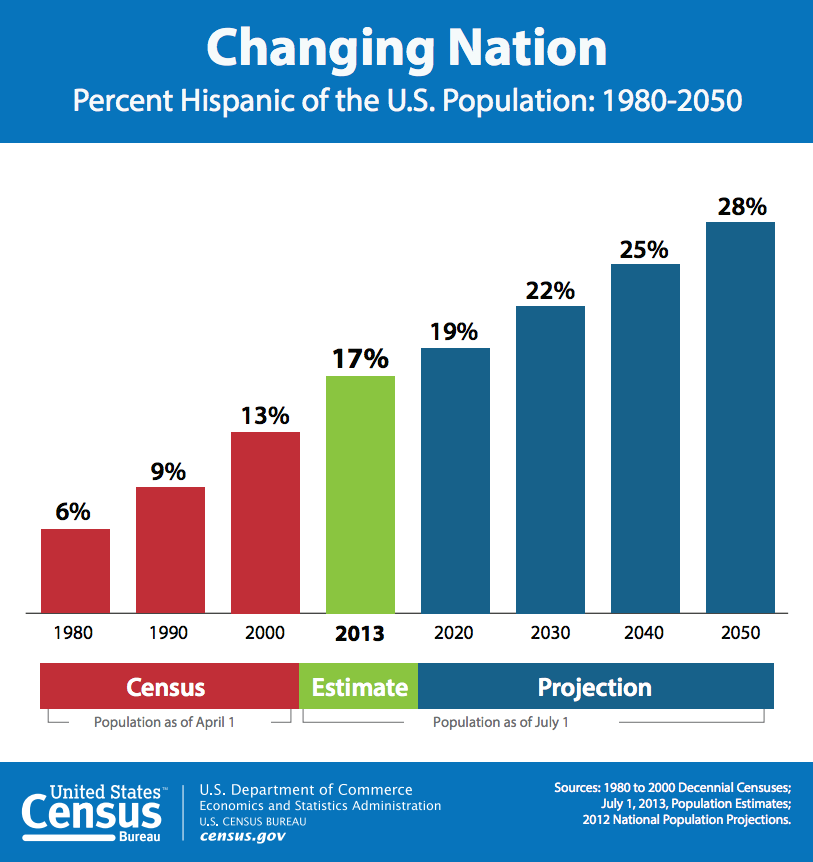
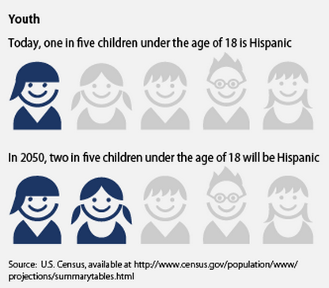

There has never been a more exciting time to be a Latino in our nation. Our issues dominate headlines and demand the attention of decision makers in all sectors of society. In the Dallas-Fort Worth region alone, the presence of Latinos is being felt in areas like the arts & culture, economics, K-12 and higher education, as well as many others.
Perhaps the biggest presence to be felt is the significant increase in population. As of July 1, 2013, Latinos totaled 54 million people making us the nation’s largest ethnic or racial minority constituting 17 percent of the nation’s total population.1 In the state of Texas, Latinos make up 38 percent of the total population.2 In 2010, DFW was the 8th largest Hispanic metro area in the U.S. Dallas County is home to 2.5 million people, 40 percent of whom are Latinos and nearly half (43%) of the city of Dallas’ population is Latino, representing many countries from South and Central America. 3
While the growing number of Latinos presents many opportunities, it also comes with significant challenges. Latinos are disproportionately affected by poverty, food insecurity, and unemployment. We are also more likely to receive emergency food assistance than white, non-Latino peers and less likely to receive SNAP benefits.4 Latinos are over represented among the poor, making up 28 percent of the more than 45 million poor Americans and 37 percent of the 14.5 million children in poverty.5
Even more concerning is a systemic deficit in Latino political representation. Despite our growing presence, Latinos vote in lower numbers and are underrepresented in areas of influence including but not limited to the business and political sectors. In Texas, which is home to nearly one in five of all U.S. Latinos, just 39 percent of Latinos who were eligible to vote in the 2012 presidential election cast a ballot. That’s compared with 48 percent of eligible U.S. Hispanics, 61 percent of eligible white Texans and 64 percent of eligible white Americans.6
The numbers do not get any better as it relates to elected representation. While Latinos are making great strides in increasing our number among elected officials, we are still grossly underrepresented in proportion to our population numbers. Latinos hold only 3.3 percent of elected seats nationally.7 Our local context bears these facts out. Two Latino trustees serve on the Fort Worth school board, and the Dallas school board is down to one Latino trustee after having three in 2010. Only one Latino trustee has been elected in several suburban school districts with Latino-majority student populations. In Dallas, only two Latinos serve on the Dallas City Council — down from three last year. And only one Latino serves on the Fort Worth City Council. The Dallas County Commissioners Court has one Latina, and none of North Texas’ congressional representatives is Latino.8
So with an increased presence in the community and an ever-growing influence, a set of simple yet profound questions must be asked: Are Latinos ready to realize our influence? Are we prepared to answer the clarion call to lead? Do we have substantive solutions to the great issues of our time and are we ready to improve the broader community?
Understanding the challenges and opportunities we face as a Latino population and emboldened by a hope to provide a resounding yes to the aforementioned questions, The Latino Center for Leadership Development was formed. Our vision is to develop the next generation of Latin@ leaders who are driven by thoughts, values, and experiences that will improve their communities. We do this by cultivating a pipeline of Latin@ leaders, optimizing their strengths and talents, and engaging them in thought and practice in order to meet the growing demand for leadership.
Our vision and mission take shape through the three foundational pillars of our Center:
Leadership institute: aimed at providing promising Latino leaders with a set of knowledge, skills, experiences, and networks necessary to assume positions of influence with a focus on policy and politics and succeed while in those positions.
Policy institute: aimed at developing innovative solutions to the issues Latinos and the broader community face.
Strategic initiatives: focused on highlighting and improving local, state, and national issues faced by citizens from all walks of life.
Join us in envisioning a future where Latinos do not just contribute to society, but lead the way.
Source: http://www.census.gov/newsroom/facts-for-features/2014/cb14-ff22.html
Source: http://quickfacts.census.gov/qfd/states/48000.html
Source: http://www.visitdallas.com/things-to-do/diverse-dallas/latino/
Source: http://www.feedingamerica.org/hunger-in-america/impact-of-hunger/latino-hunger/latino-hunger-fact-sheet.html
Source: http://www.pewresearch.org/fact-tank/2014/09/19/hispanics-only-group-to-see-its-poverty-rate-decline-and-incomes-rise/
Source: http://www.texastribune.org/2014/02/26/hispanic-voters/
Source: https://www.americanprogress.org/issues/race/report/2012/08/08/11984/the-state-of-latinos-in-the-united-states/
Source: http://www.dallasnews.com/news/columnists/mercedes-olivera/20131129-north-texas-young-latino-leaders-hope-to-fill-leadership-vacuum.ece
The Latino Center for Leadership Development recently launched it’s first strategic initiative, a movement to preserve Texas House Bill 1403-The Texas Dream Act. KeepHB1403.com was created to build a coalition of businesses, affected students, supporters, and organizations committed to preserving this law – a commonsense approach to ensure that young people who have grown up in Texas can access the education that Texas businesses need. Please visit our website to learn more about how you can get involved.
Join us as we visit Austin to address the media about the benefits of preserving Texas House Bill 1403-The Texas Dream Act.
Join us as at our inaugural gala where we will officially launch the Latino Center for Leadership Development.
Email: jbaldor@latinocld.com
Email: msolis@latinocld.com
Email: rluna@latinocld.com
Email: racuna@latinocld.com
Email: curanga@latinocld.com
Email: celso@digitalstrategy.tips